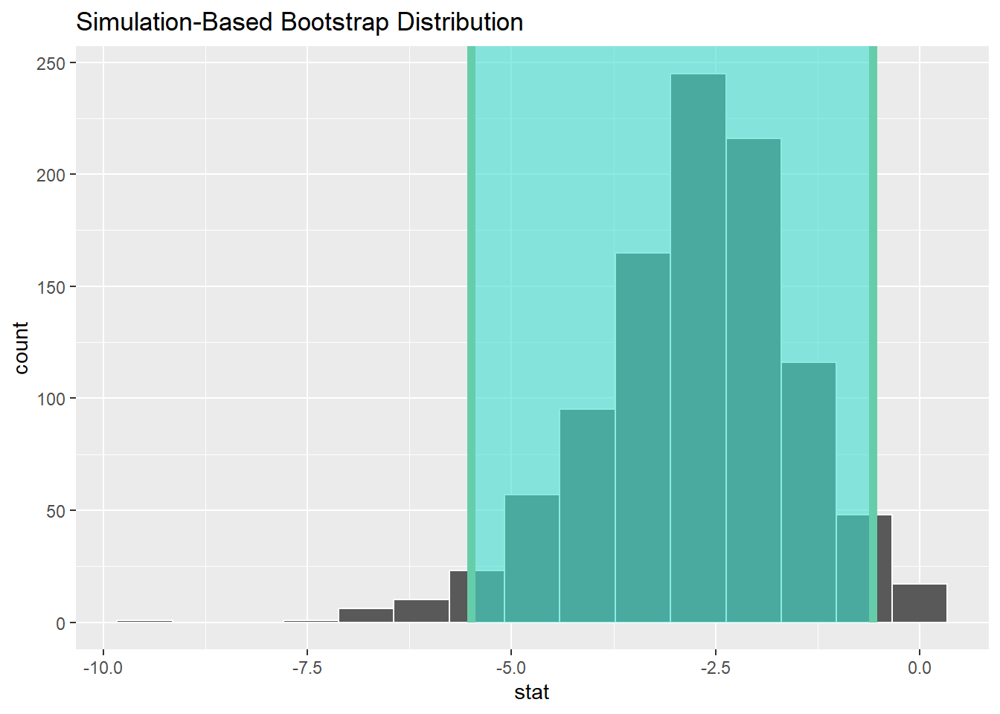
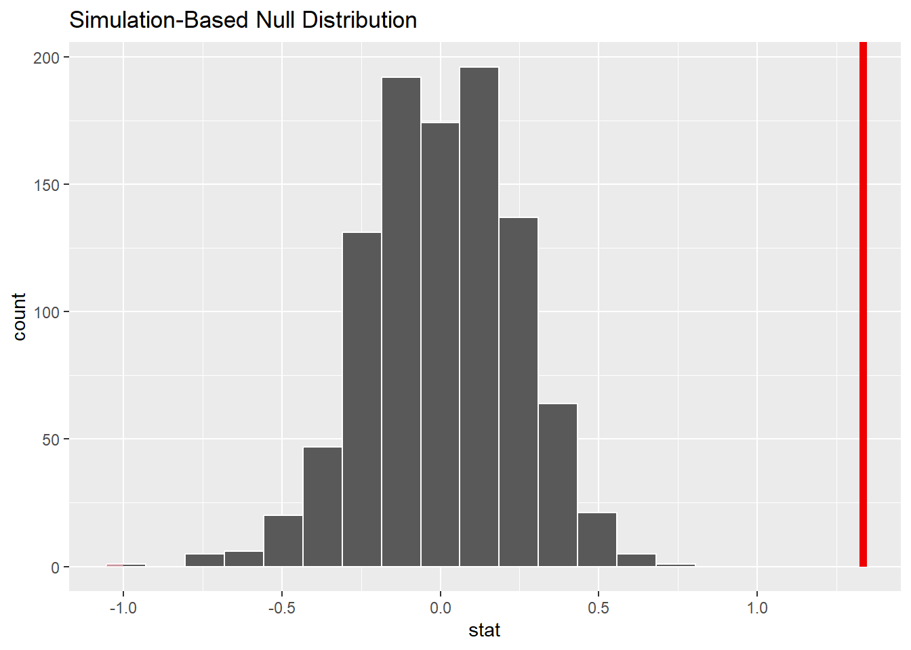

Chapter 7 T-Tests for Means
This Chapter supplements the material on t-tests in the second part of Lecture 6.
In this chapter, I will introduce the t-test, a classic analysis technique that is used to compare two groups together.
7.1 Independent Sample T-Tests
We can also use bootstrapping as an entry point to a new analysis situation, where we are comparing two groups. This could be for example in a classic experimental context; treatment and control.
Remember, t-tests can be done in any analysis setting, and it does not require bootstrapping at all. It just so happens that they are nicely explainable at this point.
So, we are going to analyze a set of data from my infamous Ed Sheeran Study1 - which would certainly win an Ignobel Prize if I were ever to do it in reality rather than in my fondest imaginings.
The design was discussed in the lecture slides, but in brief we have a two-group ‘treatment and control’ experiment, the classic ‘randomized control trial’ style study.
The first thing to do is read in the data and describe it.
## # A tibble: 6 × 3
## ID GROUP ANGER
## <dbl> <dbl> <dbl>
## 1 1 1 4
## 2 2 2 5
## 3 3 1 2
## 4 4 2 3
## 5 5 2 4
## 6 6 1 2## vars n mean sd median trimmed mad min max range skew kurtosis se
## ID 1 30 15.50 8.80 15.5 15.50 11.12 1 30 29 0.00 -1.32 1.61
## GROUP 2 30 1.50 0.51 1.5 1.50 0.74 1 2 1 0.00 -2.07 0.09
## ANGER 3 30 3.33 1.21 3.0 3.33 1.48 1 5 4 0.04 -1.30 0.22| Name | ED_IND |
| Number of rows | 30 |
| Number of columns | 3 |
| _______________________ | |
| Column type frequency: | |
| factor | 1 |
| numeric | 2 |
| ________________________ | |
| Group variables | None |
Variable type: factor
| skim_variable | n_missing | complete_rate | ordered | n_unique | top_counts |
|---|---|---|---|---|---|
| GROUP | 0 | 1 | FALSE | 2 | 1: 15, 2: 15 |
Variable type: numeric
| skim_variable | n_missing | complete_rate | mean | sd | p0 | p25 | p50 | p75 | p100 | hist |
|---|---|---|---|---|---|---|---|---|---|---|
| ID | 0 | 1 | 15.50 | 8.80 | 1 | 8.25 | 15.5 | 22.75 | 30 | ▇▇▇▇▇ |
| ANGER | 0 | 1 | 3.33 | 1.21 | 1 | 2.00 | 3.0 | 4.00 | 5 | ▁▇▇▆▇ |
We can see that we have one FACTOR variable, which we need to indicate the group each subject was in (CONTROL being GROUP 1, and ED being GROUP 2).
So, let’s run an independent samples T-Test with bootstrapped confidence interval.
We use an independent samples test, as the theory is these two groups - after participating in the experiment - are no longer the ‘same’. There is something ‘different’ about the population of people who listen to Ed Sheeran, compared to those who do not. What we are trying to do is assess whether this difference is in anger.
## # A tibble: 2 × 2
## GROUP name
## <fct> <dbl>
## 1 1 2.8
## 2 2 3.87
## Response: ANGER (numeric)
## Explanatory: GROUP (factor)
## # A tibble: 1 × 1
## stat
## <dbl>
## 1 -2.65## # A tibble: 1 × 2
## lower_ci upper_ci
## <dbl> <dbl>
## 1 -5.49 -0.575Remember: Group 1 is the control, and Group 2 listened to Ed Sheeran.
Cool, so it seems that Group 2 displayed more anger. The confidence interval for the t-statistic does not contain 0, so it supports the idea that there is a difference here. The interval is quite wide though - because of our small sample size. In a later Chapter we’ll return to this issue of what confidence intervals actually mean.
7.2 Paired-Sample T-tests
OK, so let’s use a different design, using a paired samples t-test. Let me go back to the slides… to explain this difference.
The same basic process is needed, but with some modifications because of the type of comparison we are doing. And, as such, we have some new data.
## ID ANG_T1 ANG_T2
## 1 1 1 4
## 2 2 2 5
## 3 3 3 2
## 4 4 4 3
## 5 5 2 4
## 6 6 1 2## vars n mean sd median trimmed mad min max range skew kurtosis se
## ID 1 30 15.50 8.80 15.5 15.50 11.12 1 30 29 0.00 -1.32 1.61
## ANG_T1 2 30 2.00 1.02 2.0 1.88 1.48 1 4 3 0.76 -0.57 0.19
## ANG_T2 3 30 3.33 1.21 3.0 3.33 1.48 1 5 4 0.04 -1.30 0.22Now, for this bootstrap purpose we actually need to to calculate the difference between the two measurements (here, T1 and T2).
Then, we bootstrap a one-sample t-test with this difference variable. This essentially tests whether the difference is different from zero. If it is, that indicates some effect of the treatment.
Let us first calculate the new variable:
## ID ANG_T1 ANG_T2 DIF
## 1 1 1 4 3
## 2 2 2 5 3
## 3 3 3 2 -1
## 4 4 4 3 -1
## 5 5 2 4 2
## 6 6 1 2 1## vars n mean sd median trimmed mad min max range skew kurtosis
## ID 1 30 15.50 8.80 15.5 15.50 11.12 1 30 29 0.00 -1.32
## ANG_T1 2 30 2.00 1.02 2.0 1.88 1.48 1 4 3 0.76 -0.57
## ANG_T2 3 30 3.33 1.21 3.0 3.33 1.48 1 5 4 0.04 -1.30
## DIF 4 30 1.33 1.27 1.0 1.38 1.48 -1 4 5 -0.13 -0.62
## se
## ID 1.61
## ANG_T1 0.19
## ANG_T2 0.22
## DIF 0.23We can see there is a new ‘DIF’ variable here.
Next, we bootstrap a confidence interval for the mean of the difference variable, to see whether it includes zero:

## Response: DIF (numeric)
## # A tibble: 1 × 1
## stat
## <dbl>
## 1 1.33## # A tibble: 1 × 2
## lower_ci upper_ci
## <dbl> <dbl>
## 1 0.9 1.73## [1] 2## [1] 3.333333We can do this in another way, but instead running a 1-sample t-test on the difference variable, testing whether it is different from zero:

## # A tibble: 1 × 1
## p_value
## <dbl>
## 1 0## Response: DIF (numeric)
## # A tibble: 1 × 1
## stat
## <dbl>
## 1 1.33## [1] 2## [1] 3.333333Marvelous. We can see that the results from both variants of this test suggest that after listening to Ed Sheeran, our sample on average reported more anger.
1: Because the 95% confidence interval does not include 0, I am confident in saying that there is some effect going on here.
2: Because the bootstrapped probability (as expressed by the p-value) of observing the mean difference in anger between T1 and T2 of 1.33 is very low (0 in our results, but the true value will not be exactly zero), I am confident in saying there is an effect here.
Not surprised…
1If you are a fan, friend, or relative of, or more importantly a lawyer for, Ed Sheeran, please note that this is not a real study. Furthermore, I am sure Ed Sheeran is a very nice person and I would delight in his company. This is merely a bit of humour.